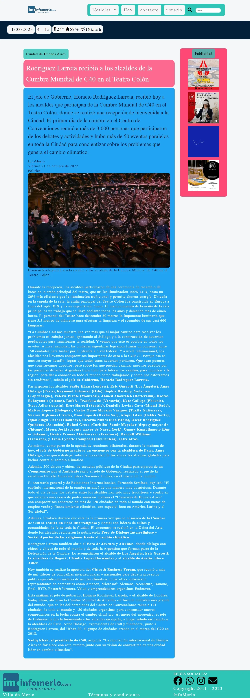
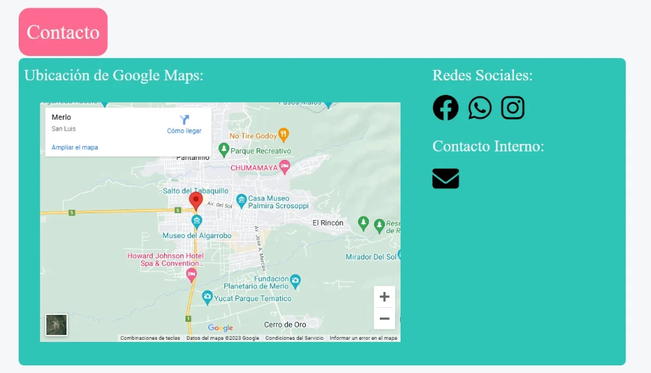
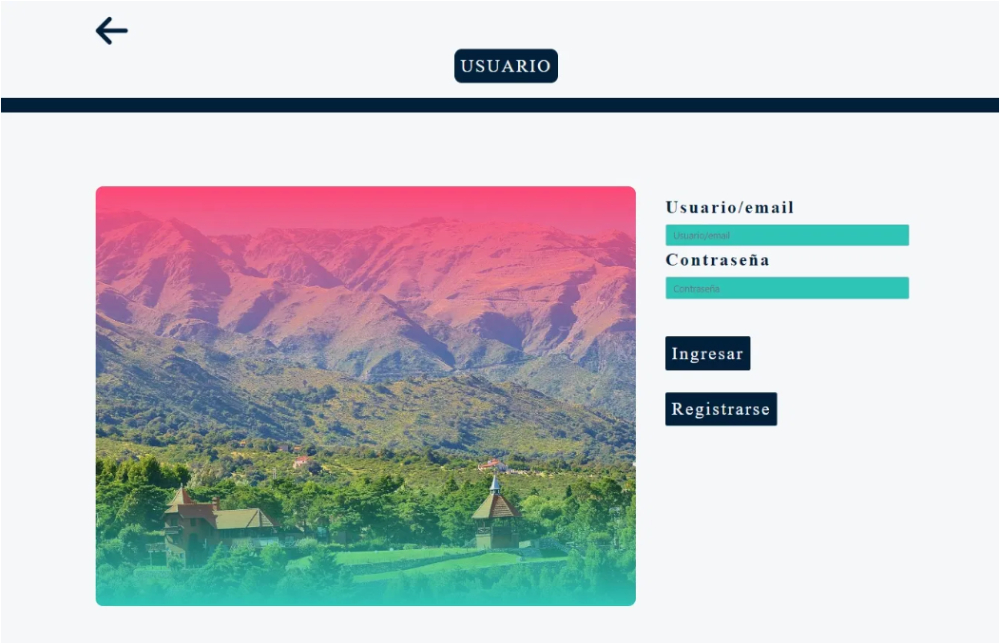
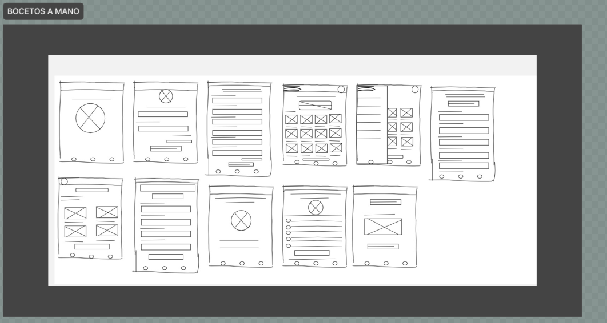
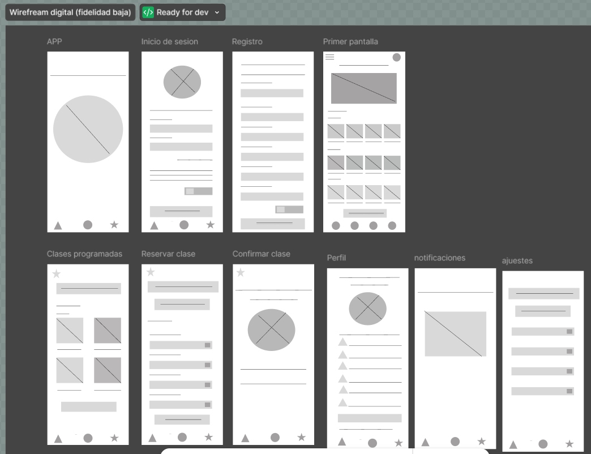

A continuación presento el proyecto que realicé para las materias Diseño Web y Usabilidad, y Frameworks y
Desarrollo Web. Elaboré un diseño de página web utilizando como base al medio informativo InfoMerlo.
En la parte del Index o Últimas Noticias presenté este diseño:
El diseño de una noticia se verá de la siguiente manera:
Para contactar al medio, se apreciará de la siguiente manera:
En el caso de que el usuario desee ingresar a su cuenta o registrar una, el diseño de la página se verá de esta manera:
Lo hemos realizado en Boceto a mano como primera instancia, a continuacion las imagenes:
Una vez aprobado el boceto, lo realizamos en Fidelidad Baja, como se muestra a continuacion
El siguiente objetivo es visualizar el proyecto en Fidelidad Alta